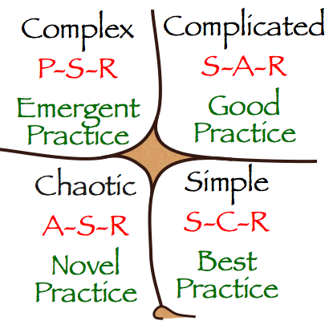
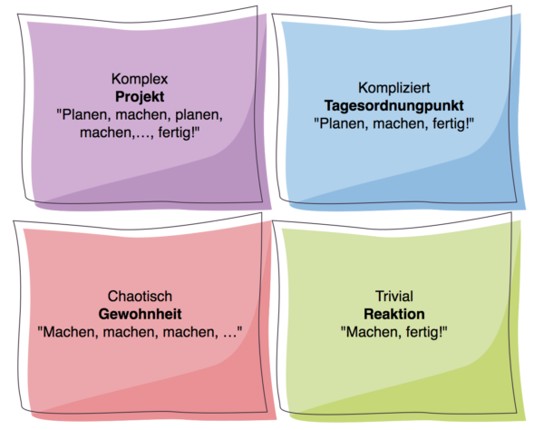

Aufgaben in Quadranten bearbeiten
Aufgaben sind nicht gleich geschaffen. Offensichtlich ist das in Bezug auf ihren Inhalt. Ich meine hier aber ihre „Komplexität“.
Komplexität hört sich nach Schwierigkeit an. Doch auch darum geht es mir nicht. Ich meine so etwas wie „Absehbarkeit“: Wie absehbar ist eine Erledigung?
Für die Gestaltung der Aufmerksamkeit ist es sehr hilfreich, die Komplexität einer Aufgabe zu bestimmen. Tut man das nicht, steigt das Risiko von Frustration und Unzuverlässigkeit.
Komplexitätsklassen
Ich teile Aufgaben in vier Komplexitätsklassen ein:
- trivial
- überschaubar
- unüberschaubar
- endlos
Angeregt wurde ich dazu durch das Cynefin Wissensmanagement-Modell. Es unterstützt Entscheider bei der Beurteilung von Situation, um angemessener zu reagieren.

Vier Quadranten, vier Klassen, das ist handlich und gut darstellbar. Außerdem scheinen mir meine Komplexitätsklassen mit den vier Hauptdomänen des Cynefin-Frameworks zu harmonieren. Deshalb habe ich sie auch Komplexitätsklassen genannt.
Triviale Aufgaben..
- ..passen zum simplen Quadranten. Sie sehen eine Aufgabe, wissen, was zu tun ist – und machen es einfach sofort. Sie reagieren auf die Konfrontation mit der Aufgabe durch Erledigung. Zack, fertig!
Überschaubare Aufgaben..
- ..passen zum komplizierten Quadranten. Sie sind zu groß, um auf sie sofort zu reagieren, aber wenn Sie einen Moment darüber nachdenken, dann erkennen Sie, dass die Aufgabe in einem Stück erledigt werden kann. Es stecken keine Unwägbarkeiten und keine Abhängigkeiten von anderen oder Ressourcen darin, die Sie nicht im Griff hätten. Wenn Sie sich die nötigen 30 Minuten oder 2 Stunden Zeit nehmen, ist die Sache vom Tisch. Das bedeutet, sie planen die überschaubare Aufgabe für einen Tag in Ihrem Kalender als „Tagesordnungspunkt“ ein, erledigen Sie dann gewissenhaft und haben das Ergebnis im Sack.
Unüberschaubare Aufgaben..
- ..passen zum komplexen Quadranten. Sie sind zu groß, als dass sie in einem Stück an einem Tag erledigt werden könnten. Allerdings können sie überhaupt erledigt, d.h. zu einem definierten Ende gebracht werden – nur braucht das mehr Zeit, womöglich sogar ungewiss viel Zeit. Sie können deshalb zunächst nicht mehr tun, als eine unüberschaubare Aufgabe in Teilaufgaben zu zerlegen und dafür regelmäßig Zeit im Kalender zu reservieren. Sie müssen Fortschritt erzeugen, allerdings ist ungewiss, wie viele Schritte es bis zum Ziel sind; so ist das oft mit Projektarbeit. Deshalb planen Sie unüberschaubare Aufgaben nicht einmalig ein, sondern rollierend: Sie wechseln zwischen Planung und Durchführung immer wieder ab. Ihr Vorgehen ist damit iterativ, wie es heute in Zeiten der Agilität heißt. Sie formulieren quasi immer wieder Hypothesen, wie Sie dem Ziel näher kommen können; dann arbeiten Sie gemäß der Hypothese an der Aufgabe; dann schauen Sie, wie weit Sie in der Zeit gekommen sind und überarbeiten Ihre Hypothese, nach der Sie dann wieder planen und arbeiten usw.
Endlose Aufgaben..
- ..passen zum chaotischen Quadranten. Sie unterscheiden sich grundsätzlich von den anderen Aufgaben, als dass sie kein definiertes Ende haben. Es gibt kein Ankommen. Sie können nicht absehen, wann und ob überhaupt je die Aufgabe erledigt sein wird. Das Kennzeichen von Chaos ist das Fehlen von Klarheit, von Konturen und Grenzen. So ist es bei endlosen Aufgaben auch: sie sind grenzenlos und können daher potenziell ihre ganze Aufmerksamkeit fressen. Dem müssen Sie kühn entgegenwirken durch klare, bewusste Selbstbegrenzung. Endlosen Aufgaben kommen Sie nur mit Gewohnheiten bei, die Sie fest in ihrer Aufmerksamkeitsstruktur verankern.

Praktische Auswirkungen
Wenn Sie einer neuen Aufgabe begegnen, ist es praktisch relevant, dass Sie ihre Komplexitätsklasse möglichst korrekt einschätzen. Tun Sie das nicht und gestalten Ihre Aufmerksamkeit unpassend, sind Konflikte, Frustrationen, Verzögerungen vorprogrammiert.
In der Vergangenheit habe ich Ihnen den Tipp gegeben, nach der Ivy-Lee-Methode Aufgaben zu erledigen. Die finde ich weiterhin nützlich – doch mit den Komplexitätsklassen können Sie damit nun differenzierter umgehen.
Die Ivy-Lee-Methode adressiert grundsätzlich überschaubare und Unüberschaubare Aufgaben. Steht ein Tagesordnungspunkt zuoberst auf Ihrer Liste, wird er am nächsten Tag einfach erledigt – danach geht es weiter mit der nächsten Aufgabe.
Steht hingegen ein Projekt zuoberst auf der Liste, ist nicht damit zu rechnen, dass es am nächsten Tag erledigt wird. Es bleibt dann ungewiss lange die einzige Aufgabe, um die Sie sich tagelang, womöglich wochenlang kümmern.
Das ist konsequent und hat seinen Charm. Es wird der Verzettelung vorgebeugt, Sie werden motiviert, Ihre ganze Energie in das Projekt zu stecken, damit die nächsten Aufgaben auch erledigt werden können. Doch wenn Sie nicht rein selbstbestimmt arbeiten, ist dieses Vorgehen realitätsfern. So unschön es ist, Sie müssen Multitasking betreiben und mehrere Aufgaben quasi gleichzeitig bearbeiten.
Mit der Klassifikationsbrille vor den Augen, ist das nun klar. Daraus erwächst die Chance auf einen bewussten Umgang mit dieser Situation. Sie können (und müssen) ihre Aufmerksamkeit so gestalten, dass Tagesordnungspunkte in Balance gemäß Wichtigkeit und Dringlichkeit erledigt werden, bzw. fortschreiten – und Gewohnheiten dabei nicht zu kurz kommen.
Einige Beispiele aus meinem Tagesgeschäft:
Fall 1
Im Email-Posteingang finde ich die Bitte eines Kunden um einen Termin. Diesem Auftrag – d.h. einer Aufgabe, die ich mir nicht selbst gestellt habe – komme ich sofort nach. Sie ist trivial. Ich reagiere, indem ich meinen Kalender öffne, in 1-2 Minuten einen Termin finde und dem Kunden mitteile.
Fall 2
Für einen Kundentermin will ich eine Agenda vorbereiten. Das dauert 30-60 Minuten, sagt mir meine Erfahrung. Ich mache mir dafür einen Tagesordnungspunkt morgen um 9:00 Uhr im Kalender.
Fall 3
Ich möchte ein Seminar zum Thema Digitalisierung im Office an einem schönen Ort in den Bergen anbieten. Die Teilnehmer sollen die Gelegenheit haben, nicht nur zu denken und zu lernen, sondern den Lernstoff entspannt zu diskutieren und sacken zu lassen bei Gesprächen auf Wanderungen oder Mountainbike-Touren. Die Planung einer solchen Veranstaltung hat ein klares Ergebnis, ist aber nicht mal eben gemacht. Es handelt sich um ein Projekt, dessen erste Phase darin besteht, die Agenda zu planen. Dafür trage ich mir in der nächsten Woche jeden Tag 60 Minuten ein. Am Ende der Woche sehe ich dann, wie weit ich gekommen bin. Vielleicht ist Mittwoch die Agenda schon fertig, vielleicht brauche ich aber auch noch weitere Zeit. Und wenn das Ergebnis dringender wird, muss ich meine Aufmerksamkeitsblöcke vergrößern, z.B. auf 2 Stunden pro Tag.
Fall 4
Als Trainerin und Beraterin in Sachen Prozessoptimierung vermittle ich Stoff, muss aber auch ständig Stoff aufnehmen. Ich muss mich fortbilden durch Lektüre oder Seminare. Das hat natürlich kein Ende. Also muss ich mir klare Unter- und Obergrenzen dafür setzen und Gewohnheiten entwickeln. Zum Beispiel besuche ich jedes Jahr Fortbildungsveranstaltungen im Umfang von mindestens 10 Tagen; davon lege ich manche schon Monate im voraus fest. Und ich muss ganz ausdrücklich meine Aufmerksamkeit auf Fachbücher lenken. Wenn ich dafür nicht Zeit im Kalender reserviere, kommt dieser Aspekt zu kurz. Jeden Tag mindestens 30 Minuten lesen lautet daher meine Gewohnheit.
Natürlich schätze ich Aufgaben auch mal falsch ein: Ich denke, es handelt sich um einen Tagesordnungspunkt, dabei ist es ein Projekt.
Oder ich bin zu leichtfertig bei Gewohnheiten: Ich denke, dass ich keinen Kalendereintrag dafür brauche, weil ich auch ohne die nötige Zeit dafür aufwände – um später zu merken, dass ich einer Aufgabe zu wenig Aufmerksamkeit gewidmet habe angesichts all der anderen Aufgaben, die mich mit Ergebnissen gelockt haben.
Dass passiert und ist kaum zu vermeiden. Deshalb ist es umso wichtiger, sich einfach stetig strebend zu bemühen. Es wird mit der Zeit besser, auch wenn wohl nie perfekt.
Zusammenfassung
Gesellschaftlich ist Klassendenken schlecht. Bei der Gestaltung Ihrer Aufmerksamkeit hingegen ist Klassendenken sehr hilfreich: klassifizieren Sie Ihre Aufgaben nach Komplexität und planen Sie sie angemessen in Ihrem Kalender ein.
Mit der richtigen Erwartung können Sie realistischer Ergebnisse anstreben und ihre begrenzte Aufmerksamkeit besser nutzen.
Weitere Artikel

Puffer sichern Flow
Es wird allerhöchste Zeit, sich von der Idee, dass nur wer am Limit arbeitet, effizient sei, zu verabschieden. Unter Volllast, ganz ohne Puffer zu arbeiten ist eine „gute“ Voraussetzung für Unzuverlässigkeit, Fehler …

Kollaboration im Office mit Kanbanize
Ein Tool, was mich für die digitale Kollaboration im Office begeistert ist Kanbanize. Dort kann man wirklich sehr fortgeschritten und smart zusammenarbeiten. Mit seinen verschiedenen Perspektiven auf den Flow im Office, der …